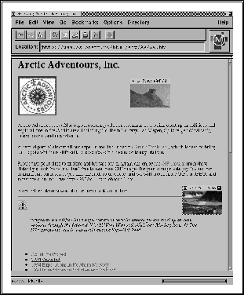

Arctic Adventours a.s. ble startet i 1984 primært med produksjon av aktive adventure reiser til Svalbard og NordNorge. Selskapet solgte i 1990 ca. 500 turer til Svalbard og drev sitt eget fartøy i en 36 passasjerers båt kalt 'Arctic Explorer'. Selskapet ble etter 1990 sesongen solgt til en større turoperatør. Grunnleggeren av Arctic Adventours, Knut Jørstad, kjøpte i 1991 en ny båt for plass til 8 passasjerer for å utvikle et nytt småskalaprodukt med økt vekt på kunnskapsformidling og turdeltakeres delaktighet i produktet.
Dette produktet ble lagt inn som et pilotprosjekt hos Oslonett i tilknytning til den beskrevne Oslonett Markedsplassen. Brosjyren ble lagt ut på nettet den 14.Januar 1994, med en logisk struktur som gir kunden muligheter til å søke innenfor tema, destinasjon og ekspedisjonstype. Brosjyren er knyttet opp til ca. 15 dias i full oppløselig kvalitet. Det er i tillegg gjort hyperlink til forskjellige andre informasjonsmateriell som er relevant (f.eks. UiTromsø's presentasjon av byen).

For å svare på det spørsmålet som alle ønsker svar på: jada, brosjyren er ikke bare fin, den selger også. Det har vært uventet mye kontakt som er skapt av denne brosjyren. Dette har selvfølgelig sammenheng med at vi var den første turoperatør til å legge ut en kommersiell brosjyre. Denne effekten vil ikke i samme grad eksistere for brosjyre nr. 101. I tillegg ble brosjyren som tidliger nevnt nominert til "Best Commercial Service" i konkurransen "Best of the Web-94".
Dette bidro til en voldsom interesse for oppslag på brosjyren, men mange av disse mer av typen som ikke var spesifikt interessert av produktet, men hvordan Oslonett hadde løst applikasjonene og strukturen. (Uansett om de ikke var direkte målgruppe, så er det klart at dette er god PR for firmaet og senere produktlanseringer).
Brosjyren har så langt nådd ca. 12.000 personer siden starten. Antallet oppslag (dvs. antall sider /eller bilder som er betraktet / lest er ca. 1500 pr. uke, dvs. ca. 67.500. Det vil si at vi vil nå ca. 16.000 personer og mer enn 80.000 oppslag i løpet av det første året. Av dette ble det booket 4 plasser til Svallbard i 1994. Dette produktet har en pris på ca. kr. 13.000,- i utsalg. I tillegg var interessen for hvalsafarier stort, men her hadde ikke 'Arctic Explorer' mer kapasitet i 1994, og produktet var altså utsolgt fra starten. Antallet bookinger her ville ha vært 11-12 deltakere.
Til tross for at 1995 brosjyren ennå ikke er lagt ut, så er det nå registrert 2 bookinger for skiprogrammer i Mars/April-1995. Oslonett sender hver uke ut en statistikk over registrert aktivitet rundt brosjyren, som gir meget verdifull informasjon om hva det er kundene reéllt leser.
Det er svært vanskelig å ha noen sikker formening om hvorvidt denne interessen for brosjyren som må sies å være enorm, vil fortsette eller stabilisere seg. På den ene siden så vil den miste noe av nyhetens interesse, men dette synes å bli kompensert gjennom at brosjyren nå har 'merkelapper' på mange av de virkelig interessante markedsplassene rundt i verden. Bl.a. i MecklerWeb, den hittil 'hippeste' satsing på presentasjon av kommersielle produkter på Internet, er den henvist til som det beste eksemplet de har sett innenfor Internet og har direkte link fra dette for oss varmende utsagnet. Hva slike forskjellige linker vil bety er det vanskelig ennå å si noe om, men det synes som vi faktisk har en jevn økning i antall oppslag.
Dessuten er det klart at AA's produkter treffer midt i sin målgruppe ved annonsering på nettet. Dette forholdet betyr ikke at alle produkter i samme grad ville oppnådd tilsvarende effekt av slik markedsføring.
Den pris som brosjyren reéllt har kostet er utvikling, scanning og produksjon. Sammen med leie på Oslonett's markedsplassen (kr. 7.800,- for ett år), betyr dette en totalkostnad på ca. kr. 20.000,-. Dette betyr en kontaktpris som ligger på minimum 1/15-del av hva en tilsvarende brosjyre i det samme antall ville ha kostet å produsere. Bare porto for en slik distribusjon ville ha vært kr. 88.000,-. I tillegg til kr. 50.000,- for konvolutter. (I tillegg må det nevnes at dette i virkeligheten også er svært miljøvennelig. Det produseres bare i Storbrittania i dag ca. 120 millioner turistbrosjyrer pr. år.)
Det man kan innvende at ved en tradisjonell papirbrosjyre distribusjon i denne dimensjonen så ville man ha solgt mer enn 20 reiser. Dette er riktig, så man kan si at i forhold til antallet 'look- ups' så selger man forholdvis mindre enn ved en distribuert brosjyre.
Den viktigste effekten er at man kan løse nettopp det som er små reiselivsprodukters store problem, man kan ha råd til å 'stå i markedet' tilstrekkelig lenge til at produktet begynner å selge. Alle som har markedsført reiselivsprodukter vet at dette er et av de virkelig vanskelige problemer å løse. En markedføringskostnad på kr. 20.000,- pr. år målt opp mot kr. 500.000,- pr.år ved egen distribusjon av papirbrosjyre senker terskelen for hvem som kan markedsføre seg direkte (dvs. uten bruk av agentleddene).
I tillegg må jeg si at jeg tror den 'entusiasme' eller 'lidenskap' som mange 'Internettere' legger for dagen gir et helt unikt grunnlag for småprodusenter til å etablere en relasjonsmarkedsføring som tidligere ikke har vært mulig.
Disse har det vært mange av på nettet. Alle har for vår del vært positive. F.eks. så ønsker nå WWF å bygge en link fra sin havpattedyr brosjyre opp mot alle som driver med hvalsafaris. Dermed vil de ha en direkte link til AA's programmer for hvalsafari i NordNorge. Flere slike henvendelser e gjort fra forskjelligste anknytningspunkter f.eks. Lonely Planet's interaktive reisehåndbøker. Det eneste problemet har vært at sålenge Norge ikke har noen felles presentasjon av sin informasjon på Internettet, så har det vært endel spørsmål i tilknytning til Norge som besøksmål generelt. Men som 'lidenskapelig Internetter' så svarer man så godt man kan på disse også, det ligger i Internettets kodeks for oppførsel.
``Tilfellet Den Italienske Astrofysiker''
Som nevnt ovenfor åpner Internet for nye former for relasjonsmarkedsføring som ingen medium tidligere har kunnet tilby. Det er i øyeblikket en kunde som var med på en av 'Arctic Explorer' sine - seiling i kombinasjon med skiturer - programmer i 1994. Vedkommende er astrofysiker i Padua i Italia. Han fikk spesiell interesse for et eget område vi besøkte. Han har nå til hensikt å markedføre en egen tur med 'Arctic Explorer' til dette stedet, for å kunne vende tilbake dit. Han har nå scannet inn mer enn 30 bilder fra turen som ligger på hans server i Padua. Han har skrevet en tekst om hvilke innhold og 'topics' for denne turen. Det eneste AA har gjort er å godkjenne en linking til avgangen i vårt eget program, så får vi se..... . Den som undervurderer sine kunder kan fort finne det vanskelig å operere på Internet, men du verden så moro det er for de som liker dette.
Internet vil såvidt vi kan vurdere etter ett års 'samliv' med dette mediet, komme til å tilby en revolusjon innenfor produksjon av feriereiser og presentasjonen av underlagsmaterialet i tilknytning til disse. F.eks. så vil de såkalte F.I.T. produksjoner (Foreigners Independent Tours ) først nå gjennom Internet begynne å bli virkelig sofistikerte. Vanskelighetene rundt det å reise på egenhånd i forhold til bestillingene vil i de nærmeste årene bli eliminert (jeg ser her bort fra at dette i enkelte områder kan være lite ønskelig av helt andre grunner). Men det vil tiltross for senkede brukergrensesnitt være ennå noen år før de store breddesegentene vil delta i en slik form for kjøp av feriereiser. Men de som tror det aldri vil skje tror jeg undervurderer de kommende generasjoners evne til å orientere seg på nettet.
Nettverksarbeidet er også tidligere nevnt. Men AA er i sammen med flere kolleger i tilsvarende selskaper rundt i verden, blitt enige om å sette opp et Adventure Network, hvor vi markedsfører alle deltakernes produkter samlet. Dette betyr at vi som sådan fremstår med det samme produkt som ellers kun kan skapes gjennom bruk av en agent, som en katalogproduserende enhet. Mens det eneste vi trenger er en felles home-page og resten gjøres med hypertekst.